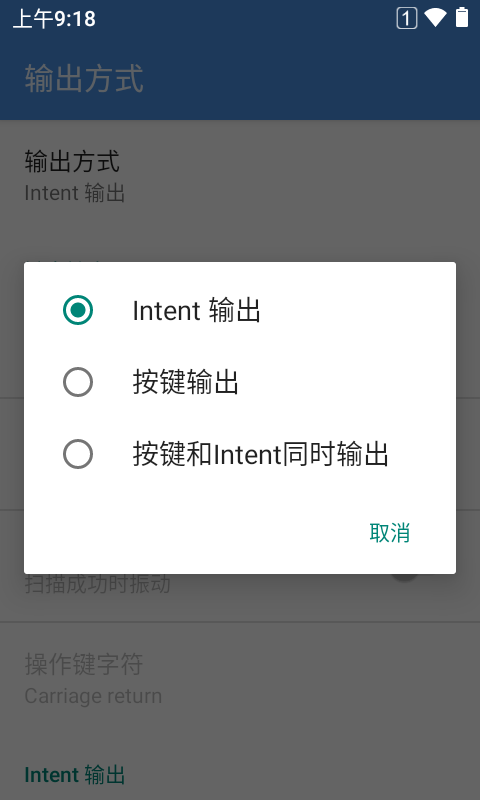
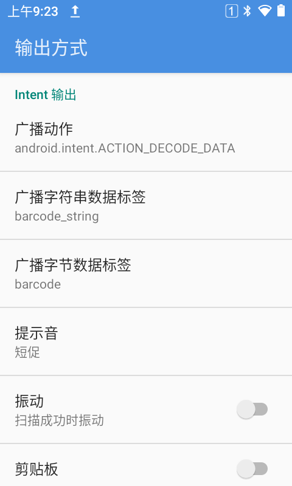
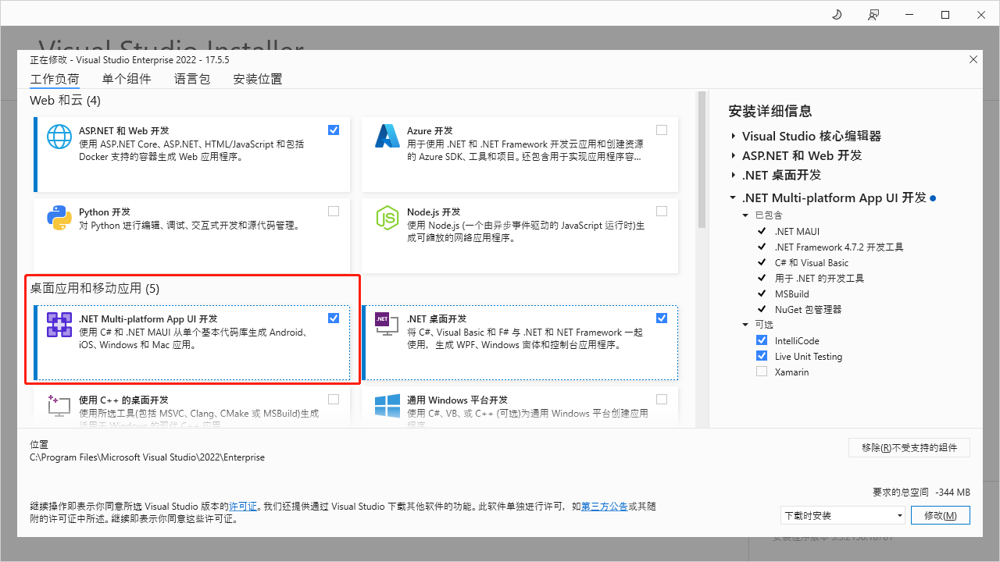
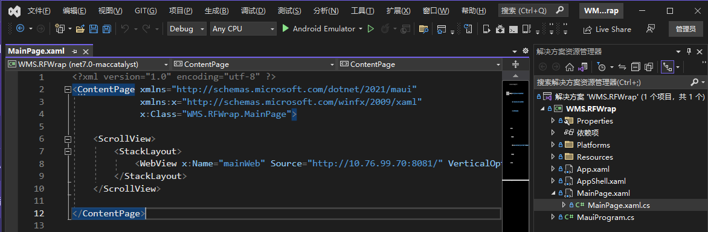
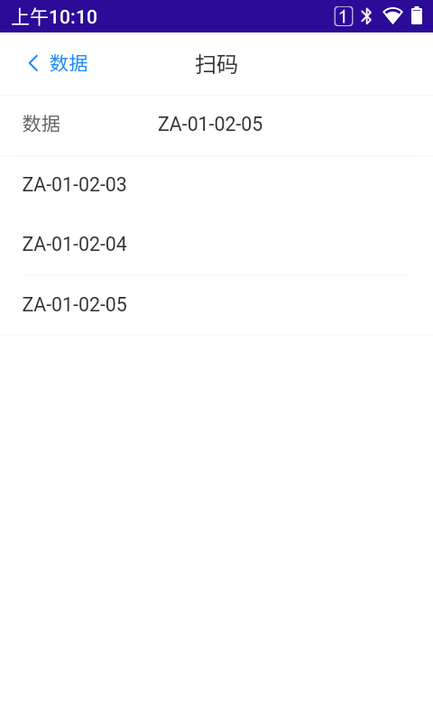

前言
公司系统的手持终端(PDA)是用的Vue写的前端代码
在PDA上用浏览器直接打开Web页面
PDA扫码的时候,输出模式直接用模拟键盘按键的方式输出
这样在Web页面上，如果一个输入框在当前有焦点的情况下
PDA扫码的内容会直接填充至对应的输入框
正常的话这样没有问题
但是最近有一个项目，PDA不是我们提供。
而是使用现有PDA，要把我们的系统在现有PDA上使用
但是现有PDA使用的扫码输出方式是用的Andorid广播
因为现有PDA不只有我们一家系统，所以不能修改扫码输出方式
这样就使得我们不得不对系统进行改造


思考方法
因为系统已经使用Vue框架已经开发好的。不可能为了这么点事情
把PDA上的系统全用Android重新来开发一次，那样成本太大
所以想的办法也很简单。
就是做一个Andorid的程序套壳，然后在程序里使用WebView加载现有系统
这样在Andorid程序里接收PDA扫码的广播信号
然后收到信号后，把扫码到的内容使用WebView的JavaScript调用方式
传输到Web页面接收。
这样就实现了在Web页面上接收Andorid的广播消息功能
实现过程
因为我们没有Andorid的开发人员，
只有前端的NodeJs和后端的.Net开发人员
所以开发Android程序框架也很自然
只能是.Net开发人员使用 Xamarin.Android 或者 MAUI 这两种方式
因为只是一个Android的程序套壳，界面也不是很难
所以就当一次小试验，自然也就想尝试一下微软最新的MAUI了
安装MAUI
因为我们原来开发没有使用过MAUI,虽然机器上有VS2022
但是也要添加MAUI的开发功能
安装MAUI参考链接

创建MAUI应用
参照微软的文档一步步操作创建MAUI应用
创建MAUI应用参考链接
在主界面添加WebView

WebView参考文档
我们设置WebView的浏览地址为我们系统的Web地址
此处设置为：http://10.76.99.70:8081/
把MainPage.xaml文件修改如下
1
2
3
4
5
6
7
8
9
10
11
12
| <?xml version="1.0" encoding="utf-8" ?>
<ContentPage xmlns="http://schemas.microsoft.com/dotnet/2021/maui"
xmlns:x="http://schemas.microsoft.com/winfx/2009/xaml"
x:Class="WMS.RFWrap.MainPage">
<ScrollView>
<StackLayout>
<WebView x:Name="mainWeb" Source="http://10.76.99.70:8081/" VerticalOptions="FillAndExpand"></WebView>
</StackLayout>
</ScrollView>
</ContentPage>
|
接收Android广播消息
在Platforms.Andorid目录下创建广播消息接收代码
其中，IntentFilter设置的值要与PDA上配置的广播消息代码一至
1
2
3
4
5
6
7
8
9
10
11
12
13
14
15
16
17
18
19
20
21
| namespace WMS.RFWrap.Platforms.Android;
[BroadcastReceiver(Enabled = true, Exported = true)]
[IntentFilter(new[] { "android.intent.ACTION_DECODE_DATA" })]
public class ScanBroadcastReceiver : BroadcastReceiver
{
private Action<string> ScanDataAccepted;
public ScanBroadcastReceiver()
{
}
public ScanBroadcastReceiver(Action<string> action)
{
this.ScanDataAccepted = action;
}
public override void OnReceive(Context context, Intent intent)
{
var value = intent.GetStringExtra("barcode_string");
ScanDataAccepted?.Invoke(value);
}
}
|
在Platforms.Andorid.MainActivity.cs文件注册广播接收
1
2
3
4
5
6
7
8
9
10
11
12
13
14
15
16
17
18
19
20
21
22
23
24
25
26
| public class MainActivity : MauiAppCompatActivity
{
public ScanBroadcastReceiver scanReceiver { get; set; }
public static Action<string> ScanDeviceRecevied;
protected override void OnCreate(Bundle savedInstanceState)
{
base.OnCreate(savedInstanceState);
scanReceiver = new ScanBroadcastReceiver((barcode) =>
{
ScanDeviceRecevied?.Invoke(barcode);
});
}
protected override void OnResume()
{
base.OnResume();
RegisterReceiver(scanReceiver, new Android.Content.IntentFilter("android.intent.ACTION_DECODE_DATA"));
}
protected override void OnPause()
{
UnregisterReceiver(scanReceiver);
base.OnPause();
}
}
|
在MainPage.xaml.cs文件里编写接收代码
接收到广播扫码内容后，通过WebView的Eval方法来执行Web页面方法
我们这里使用的是window.postMessage协议通讯
window.postMessage参考文档
我们调用postMessage方法，把内容传输到Web页面
1
2
3
4
5
6
7
8
9
10
11
12
13
14
15
16
17
18
19
20
21
22
23
24
| public partial class MainPage : ContentPage
{
public MainPage()
{
InitializeComponent();
#if ANDROID
MainActivity.ScanDeviceRecevied = (barcode) => {
Console.WriteLine(barcode);
OnScanBarcode(barcode);
};
#endif
}
public void OnScanBarcode(string barcode)
{
if (mainWeb != null)
{
var data = new { type = "barcode", data = barcode };
var json = JsonSerializer.Serialize(data);
var script = $"postMessage({json},'*')";
mainWeb.Eval(script);
}
}
}
|
在前端Vue页面接收WebView传过来的postMessage信号
因为我们使用的是postMessage信号，所以在前端只要监听message事件就可以了
message事件与Vue无关，所有Web页都可以使用
然后在onScanMsg回调方法里面处理对应的数据，就能正常接收信息了
window.addEventListener(‘message’, onScanMsg)
1
2
3
4
5
6
7
8
9
10
11
12
13
14
15
16
17
18
19
20
21
22
23
24
25
26
| <template>
<router-view />
</template>
<script>
import { provide, ref, reactive, toRaw, onMounted, onUnmounted } from 'vue'
import { useStore } from 'vuex'
export default {
setup() {
const store = useStore() //使用store
onMounted(() => {
window.addEventListener('message', onScanMsg)
})
const onScanMsg = (e) => {
console.log('onScanMsg', e)
if (typeof e.data === 'object' && e.data.type === 'barcode')
store.commit('SET_SCANCODE', e.data.data)
}
return {}
}
}
</script>
<style>
</style>
|
本示例是接收到信息后，通过vuex设置全局Store值
这样在要获取扫码的页面只用监听Store值变化，就可以接收到最新的扫码结果
1
2
3
4
5
6
7
8
9
10
11
12
13
14
15
16
17
18
19
20
21
22
23
24
25
26
27
28
29
30
31
32
33
34
35
36
37
38
| <template>
<van-nav-bar title="扫码" left-text="数据" left-arrow fixed placeholder @click-left="$router.replace({ path: '/Home/DataIndex' })" />
<van-field v-model="scancode" label="数据" placeholder="请扫码" />
<van-list>
<van-cell-group>
<van-cell v-for="item in list" :key="item" :title="item" />
</van-cell-group>
</van-list>
</template>
<script>
import { defineComponent, reactive, ref, toRefs, toRaw, onMounted, watch, computed, getCurrentInstance } from 'vue'
import { useStore } from 'vuex'
import { useRouter, useRoute } from 'vue-router'
import { Toast } from 'vant'
export default {
setup() {
const store = useStore()//使用store
const defaultWhseId = computed(() => store.getters.whseId)
const defaultStorerId = computed(() => store.getters.storerId)
const router = useRouter()//使用router
const route = useRoute()//使用route
const scancode = computed(() => store.getters.scancode)
const list = ref([])
watch(() => store.getters.scancode, (newValue) => {
list.value.push(newValue)
})
return {
scancode,
list
}
}
}
</script>
<style>
</style>
|
最终实现结果
